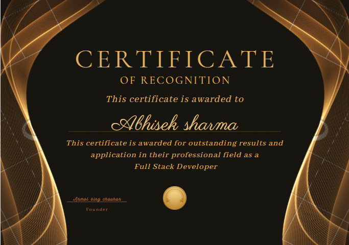

Abhisek Sharma

Certified Full Stack Developer
phone: 7389414034
E-mail: defenceexam16@gail.com
summary
Fullstack developer with 1 year of experience leaadaing both front-end and
back-end development
, and performing quality assurance. lead team of 5-10 people across technology,business,and design
Education
- Bachelor of Commerce (B.Com)
- MLB commmerce and arts collage , Gwalior, India
in 2020
Skills
Full Stack Development:
Proficient in both back-end and front-end development, utilizing a wide range of programming languages and frameworks.Digital Marketing:
Knowledgeable in various digital marketing strategies, including SEO, social media marketing, and content creation.Animation:
Skilled in creating engaging animations using industry-standard software.
Communication:
Possess excellent English speaking skills, enabling effective communication with clients and team members.
certificate

Work experience
Fullstack Developer
At coding Dragon, India
Collaborated with a cross-functional team to design and develop innovative web applications, ensuring optimal user experience.
Utilized various technologies, such as -
HTML, CSS, JavaScript, Python, and Django,
to create responsive and dynamic web solutions.
Implemented SEO best practices and optimized website performance to enhance organic search rankings and user engagement.
Assisted in the development and execution of digital marketing campaigns to drive brand awareness and increase customer acquisition.
Contributed to the creation of animated content for promotional videos, improving user engagement and brand recognition.
Awards
Recognition for outstanding performance as a Fullstack developer for giving best serice to clint by making futurstic website for clint.
Achievement in 2023.

others